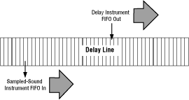
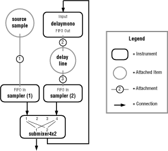

A delay instrument (such as delaymono.dsp) accepts an audio signal input from another source such as a sampled sound instrument or a sound synthesis instrument. The delay instrument writes that audio signal into the delay line, starting at the beginning of the delay line. It writes samples through to the end of the delay line, then starts over at the beginning, overwriting previously written samples. This looping recording of audio signal samples provides a stored record of the audio signal. Its duration depends on the size of the delay line. For example, a 44,100 sample delay line can store one second's worth of audio signal.
To create a delayed playback of the audio signal stored in the delay line, a sampled sound instrument is attached to the delay line. The instrument reads the delay line sample as it would a normal sample, with two differences: the instrument reads the sample and loops back to read it again and again; and the attachment from the delay line to the instrument is set to start sample playback at a point later than the starting point. (To do this, use the attachment's AF_TAG_START_AT tag argument.) The result is that the sampled sound instrument's playback trails the delay instrument's sample writing as shown in Figure 1.

Figure 1: Sample of a delayed audio signal.
The number of samples between the delay instrument's writing and the sampled sound instrument's reading sets the amount of time the audio signal is delayed. For example, the delay instrument writes to the delay line at 44,100 samples per second. The sampled sound instrument reads at the same rate (you should never use a 22,050 Hz sampled-sound instrument to read the delay line), but is 11,025 samples behind. The total delay is 1/4 second (11,025 divided by 44,100).
Item CreateDelayLine( int32 NumBytes, int32 NumChannels, int32 IfLoop )NumBytes, the size of the delay line's sample buffer in bytes; NumChannels, the number of channels stored in each sample frame; and IfLoop, a setting that determines whether the delay line is written to repeatedly or only once.
The first value, NumBytes, should be determined by the length of the audio signal you want stored, by the size of each sample, and by the number of channels in each frame. For example, if you want to store two seconds of a 16-bit stereo signal, you should set NumBytes to 352,800 bytes (2 seconds times 44,100 Hz times 2 bytes times 2 channels).
The second value, NumChannels, is usually 1 for a mono sample and 2 for a stereo sample. Note that the Audio folio does not handle more than two channels in a sample.
The third value, IfLoop, is either TRUE (1) to set the delay line so that the delay instrument writes to it continuously, looping sample data; or FALSE (0) to set the delay line so that the delay instrument writes to the delay line only once and then stops.
When it executes, CreateDelayLine() allocates a sample data buffer in system memory, creates a delay line item, and returns the item number of the delay line if successful. If unsuccessful, it returns a negative value (an error code).
Note that the task cannot write directly to the sample data buffer, because it is located in system memory. If the task attempts to write to system memory, it will crash. The task must use the delay instrument to write into the delay line's sample data buffer.
Err DeleteDelayLine( Item DelayLine )
delay1tap.dsp instrument is the best way to create simple delays.

Figure 2: A typical reverberation setup using a delay line and a delay instrument.
delay1tap.dsp template to create a simple delay. See the example file ta_delay.c.
As a practical matter, the sample playback should never be within 32 samples of the writing point, because the DSP writes to the delay line in bursts of samples. If the reading and writing instruments are too close in the delay line, you can get some inconsistencies in the delayed audio signal. To get maximum delay time, sample playback should start at the twentieth sample of the delay line, which gives as much delay as the length of the delay line will allow and still provide for a 32-sample read/write separation.
Another consideration when planning the distance of the playback point from the writing point is that when you start the two instruments with two StartInstrument() calls, a task of higher priority may briefly steal cycles between the two calls and throw off the timing. You should first start the instrument that is a greater circular distance behind the other instrument, then start the second instrument. This makes it less likely that the two instruments will be so close together that no delay results.
In the future, it will be possible to combine the playback and writing instruments into one with ARIA. You can then be guaranteed that you start both instruments simultaneously.
For a simple echo, output 1 is set to put out the source signal mixed with a diminished reverb signal. Output 2 is set to put out only the source signal. Because the reverb loop receives only the source signal, it creates a single echo (a delayed playback) of the source.
For many receding echoes, output 1 is set, as before, to put out the source signal mixed with a diminished reverb signal. Output 2 is also set to put out the source signal mixed with a diminished reverb signal. Because the reverb signal feeds back into the reverb loop, you create a series of receding echoes that you can adjust with the mix of the reverb to source signal and with the length of the delay set by the attachment starting point.